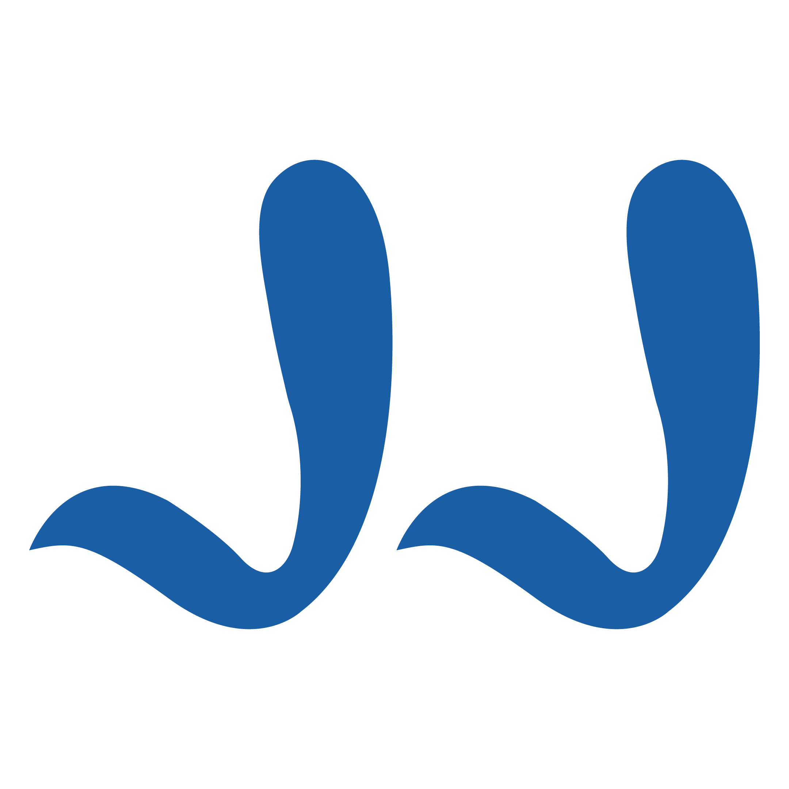
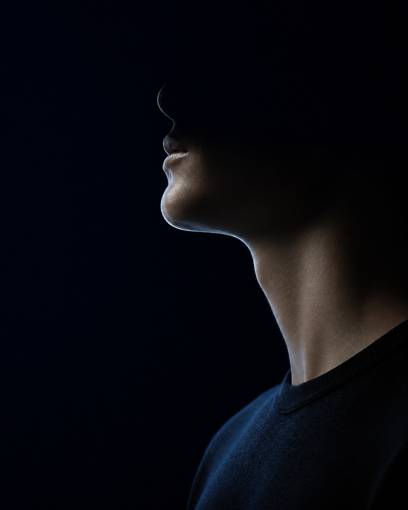
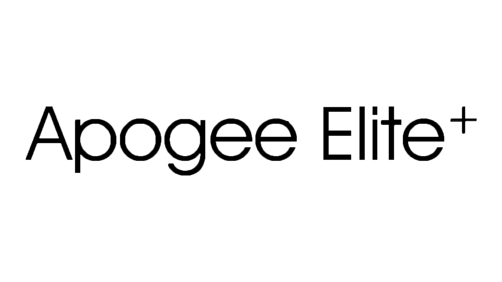
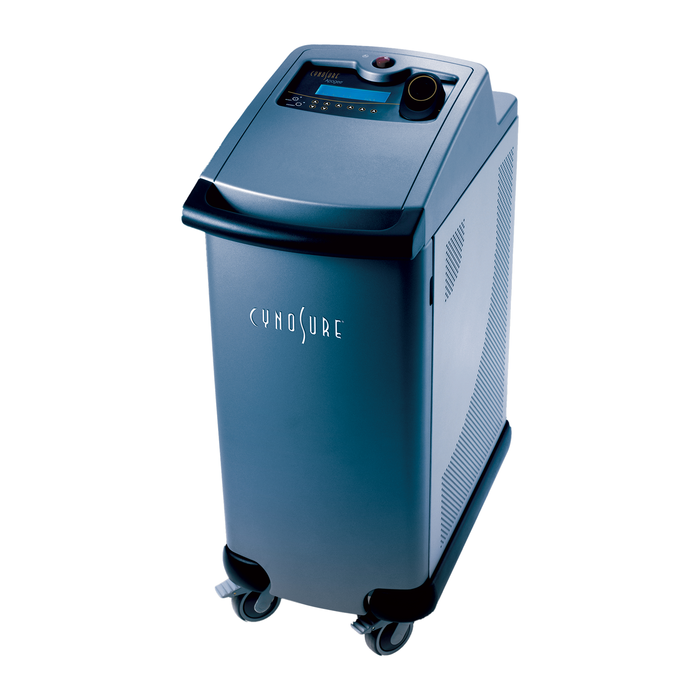
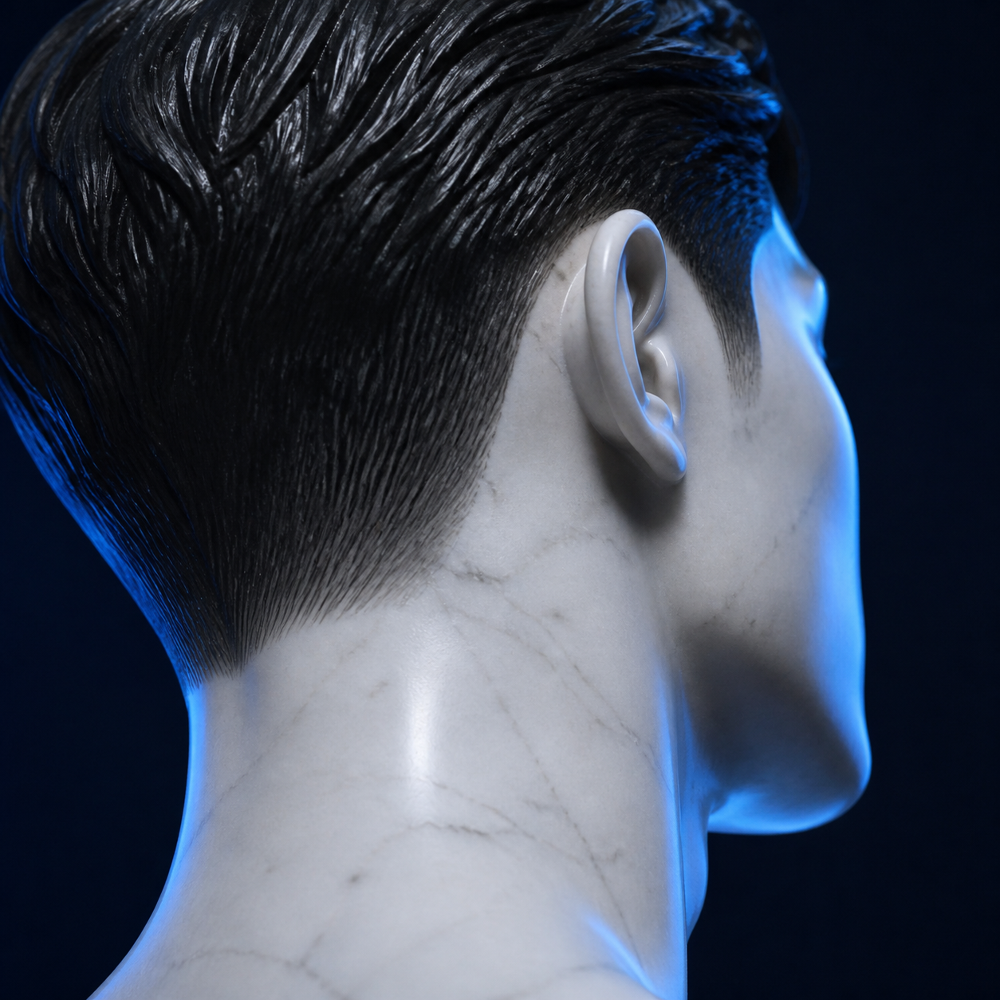
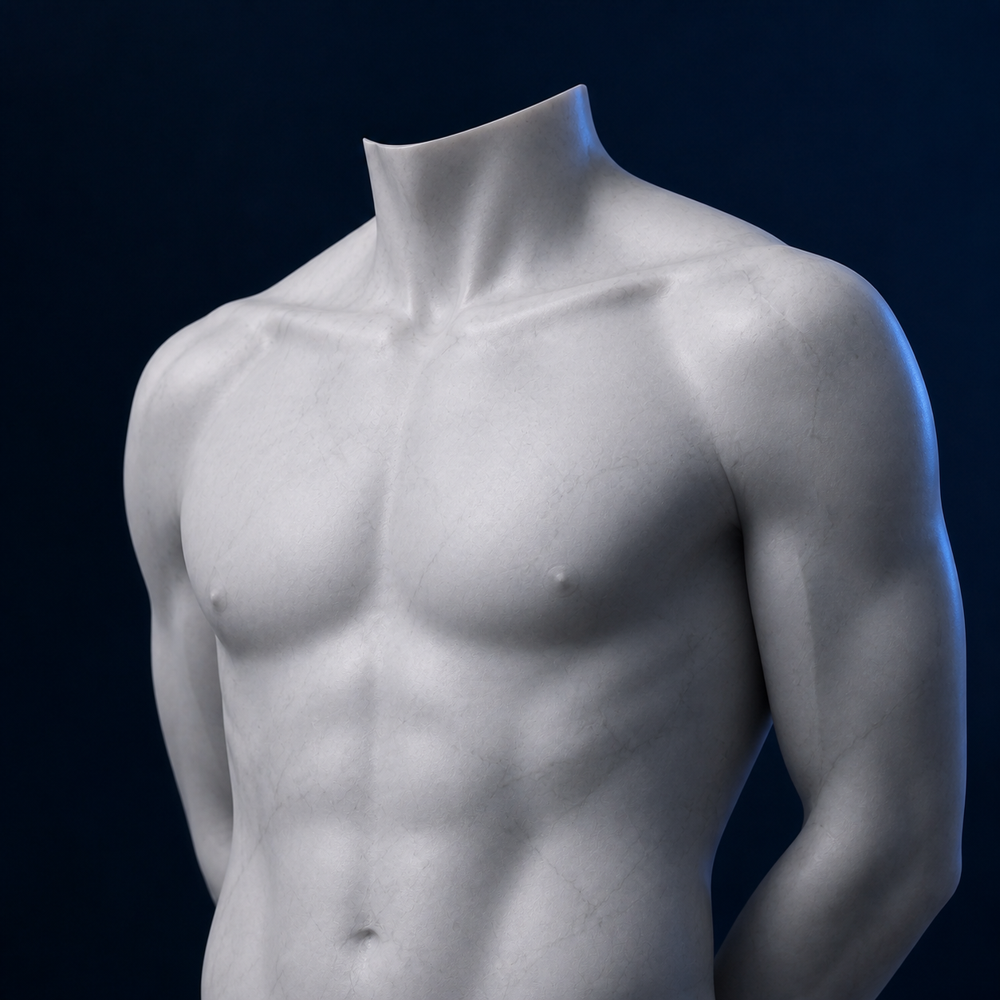
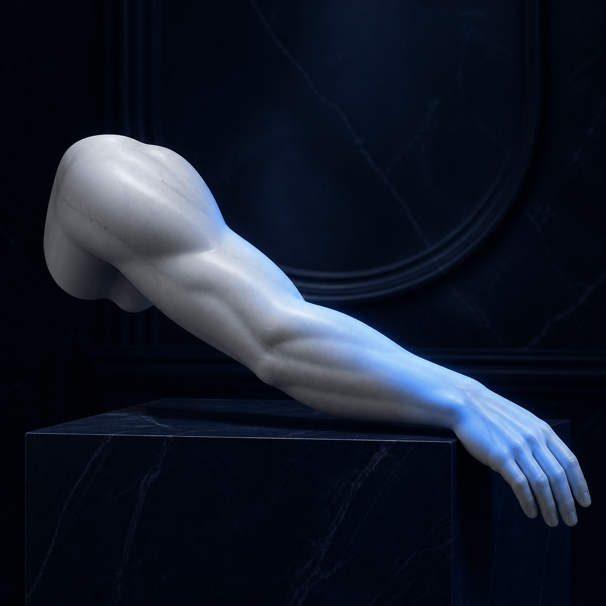
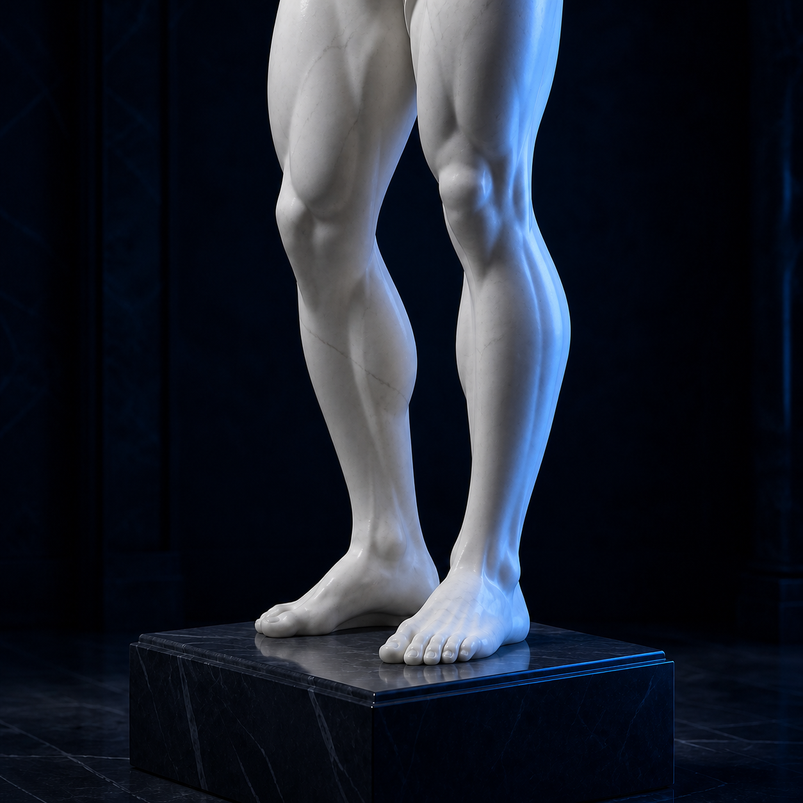
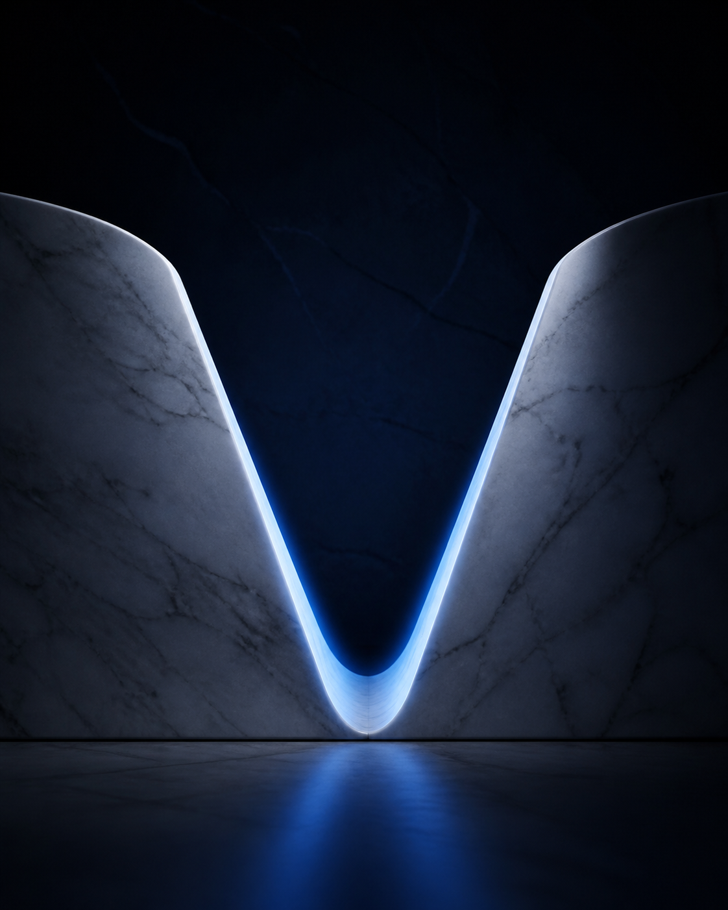

남성 전담 진료
상담부터 시술과 후케어까지 남성 의료진과 스태프가 함께합니다.

JJ UROLOGY
왜 비뇨의학과인가
남성 체모는 모근이 깊고 밀도가 높으며 호르몬의 영향을 강하게 받습니다. 높은 출력이 필요한 만큼 피부 상태와 신체 구조를 세심하게 살피고, 부위별 모근 깊이와 모질에 맞춘 계획이 중요합니다.
남성 전담 프라이빗 케어
상담부터 시술과 후케어까지 남성 의료진과 스태프가 함께합니다.
시선과 동선을 분리한 독립 공간에서 편안하게 진행합니다.
피부 톤, 모질, 굵기와 모근 깊이에 맞춰 파장과 출력을 설정합니다.
표면 마취와 연속 에어 쿨링을 병행해 열감과 통증 부담을 낮춥니다.


CYNOSURE APOGEE ELITE+아포지 엘리트 플러스
아포지 엘리트 플러스의 755nm 알렉산드라이트와 1064nm 롱펄스 엔디야그를 피부 톤과 모질에 맞춰 선택합니다.
상대적으로 얕은 모근과 밝은 피부 타입에 효과적으로 접근
깊고 굵은 모근과 다양한 피부 톤을 고려한 롱펄스 파장
부위별 맞춤 프로그램
원하는 부위만 선택하거나 여러 부위를 함께 상담할 수 있습니다. 부위별 털의 굵기와 피부 민감도에 맞춰 계획합니다.
반복되는 면도 자극과 푸른 수염 자국을 줄여 보다 단정한 인상으로
털 박힘과 운동 중 쓸림을 줄여 깔끔하고 쾌적한 바디라인으로
남성 전담 스태프와 독립 공간에서 위생과 프라이버시까지 세심하게
남성 맞춤 5단계
피부 타입과 털의 밀도·굵기, 원하는 라인을 확인합니다.
부위와 통증 민감도에 따라 표면 마취 후 충분히 기다립니다.
모근 깊이와 피부 반응에 맞춰 파장과 출력을 설정합니다.
레이저 열감을 낮추고 자극받은 피부를 편안하게 진정시킵니다.
모낭염 예방과 일상 관리 방법을 자세히 안내합니다.
비용 안내
표기 금액 단위는 만원입니다.
개인의 상태와 실제 시술 범위에 따라 달라질 수 있습니다.

인중15만원
턱25만원
목20만원
볼20만원
구레나룻20만원
얼굴 전체50만원
뒷목 헤어라인25만원

가슴40만원
배40만원
가슴 + 배75만원
유륜20만원
허리35만원
등75만원

겨드랑이5만원
어깨35만원
상완35만원
하완35만원
손20만원

엉덩이50만원
종아리100만원
허벅지100만원
발20만원

삼각라인50만원
브라질리언150만원
성기50만원
음모50만원
음낭80만원
회음부40만원
항문40만원
항문 + 회음부75만원
시술 1~2일 전 면도기로 가볍게 면도해 주세요. 털을 뽑거나 왁싱하면 레이저가 목표로 하는 모근이 사라질 수 있습니다. 최소 2주간 선탠과 과도한 야외 활동도 피해주세요.
당일 미온수 샤워는 가능하며 3~5일간 사우나·찜질방·격한 운동을 피해주세요. 노출 부위에는 자외선 차단제를 꼼꼼히 사용하고 이상 반응이 지속되면 의료진에게 문의하세요.
제모 상담 안내
남성 모근은 굵고 재생력이 강해 보통 4~6주 간격으로 5회 이상을 권장합니다. 개인의 모질과 부위에 따라 필요한 횟수는 달라질 수 있습니다.
남성 의료진과 스태프가 독립된 1인 룸에서 진행합니다. 프라이버시를 우선한 동선과 편안한 안내로 부담을 덜어드립니다.
가능합니다. 다만 수술 후에는 회복 상태에 따라 일정 조율이 필요하므로 전문의 상담 후 진행합니다.
피부와 모근 상태에 맞춘 출력, 연속 에어 쿨링, 시술 후 진정 처치로 위험을 낮춥니다. 모든 시술에는 개인차와 부작용 가능성이 있어 사전 상담이 필요합니다.
1:1 비밀 상담
원하는 부위와 현재 피부 상태를 알려주세요.
남성 전담 스태프가 부담 없이 안내해 드립니다.